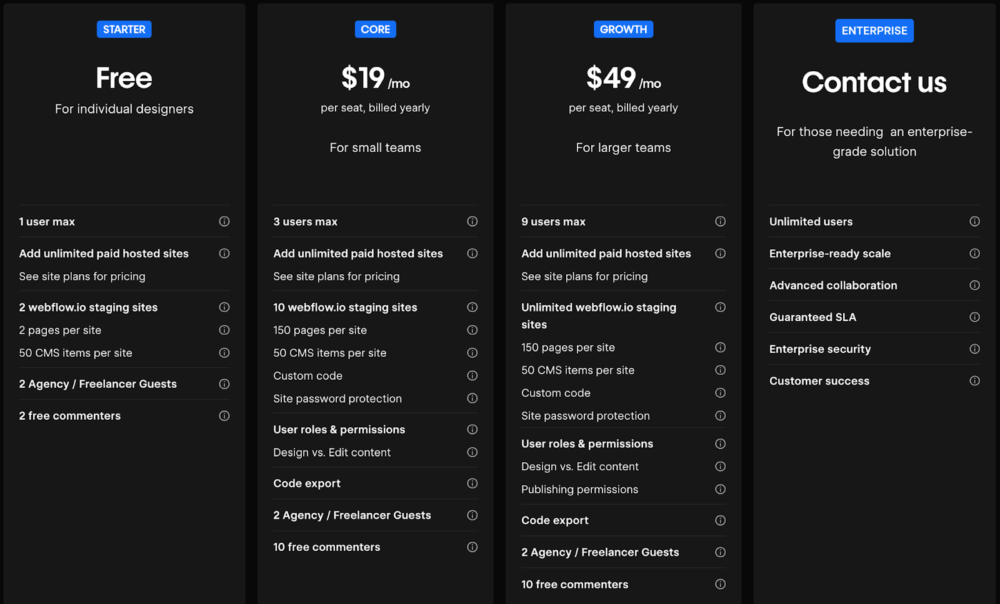
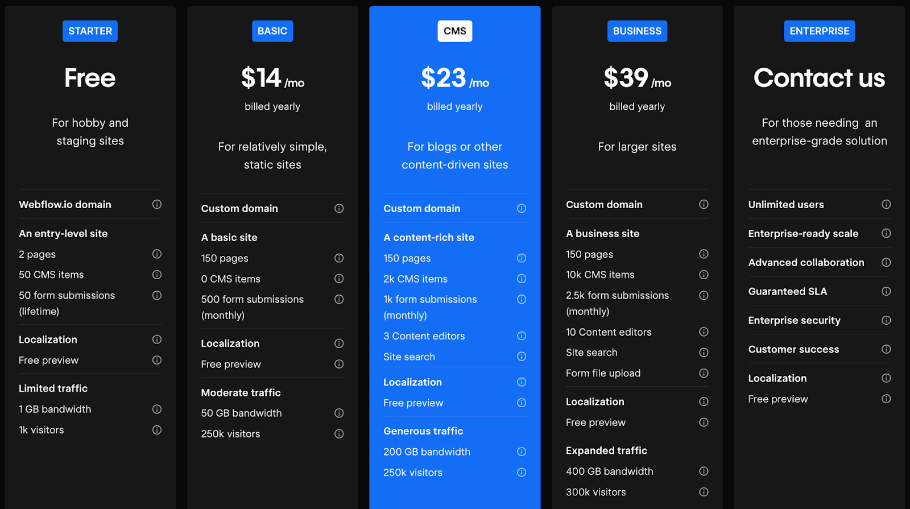

Co je Webflow a jak si v něm vytvořit web
Je to sranda. Zatímco tvořím tento web, píšu také článek o platformě, na které ho vyvíjím. Jde o můj v pořadí třetí web vytvořený pomocí Webflow. Cítím, že sebevědomí mi už dovolí něco sdělit světu. V tomto článku shrnu všechny dojmy, popíšu funkce a výhody oproti jiným řešením na trhu.
Co je to Webflow
Jde o tzv. no-code řešení vývoje webu. Tahle definice nelže, přesto se najdou nějaká ale. Pravděpodobně byste očekávali, že si web snadno vytvoříte sami i bez znalosti kódování a bude vypadá tak, jak si představujete. Ale takhle to úplně nefunguje.
Webflow nabízí přehledné uživatelské rozhraní editoru pro tvorbu webu. V něm však najdete podobnou logiku a atributy využívané vývojářem. Není to drag-n-drop editor, který znáte z Wordpressů nebo mailingových nástrojů. Nevíte, co znamená <div> a “class”? Tak to si při tvorbě webu od píky ani neškrtnete. Pokud jste ale dávali na hodinách informatiky pozor, máte šanci se chytit!
Naštěstí je tu více než 2000 šablon
Právě díky obří knihovně templatů může být tvorba vlastního webu nejen dostupná, ale také rychlá. Nemáte-li základní kodérské znalosti, musíte se spokojit s tím, co daná šablona nabízí. Díky přehlednému (trochu mi připomíná Photoshop) rozhraní alespoň brzy pochopíte, jak co smazat nebo přebarvit.
Myslete jen na to, že většina šablon bude něco stát. Ceny se pohybují od 19 do 129 dolarů. Pár šablon je tu zdarma, ale nejde zrovna o žádný zázraky. Jedna rada ode mne - Když už do Webflow jdete, investujte do takové šablony, která co nejlépe splní váš byznysový cíl.
Vlastní CMS
Nespornou výhodou Webflow je vlastní Content Management System (CMS). Například pro blog si můžete (ale nemusíte) vytvořit následující kolekce:
- kategorie článku
- články
- tagy
- autoři
Nebo cokoliv dalšího. A vše mezi sebou a se stránkami krásně provázat. Pokud si koupíte šablonu, tohle už možná bude vyřešené a na vás bude jen brnkačka v podobě přidávání nových článků. Všechny CMS kolekce můžete připojit na vytvořený design a dynamicky z nich propisovat data dle vlastních pravidel. Umí to fakt hodně.
Kdo a proč by měl používat Webflow
Není potřeba se moc rozepisovat, vše shrnu přehledně do odrážek.
Pro koho je Webflow skvělým nástrojem
- Pro firmy a freelancery, které chtějí vybudovat profesionální prezentaci, dále stránky rozvíjet a mít dobré výsledky v organickém vyhledávání
- Vývoj webu pro vašeho klienta. Na trhu najdete spousty firem, které nabízí vývoj webů na Wordpressu. Tak proč nevyvíjet také ve Webflow, které je v mnohém lepší.
- Jako nástroj marketingového oddělení pro rychlou tvorbu landing pages nebo odděleného blogu. Vše si snadno naklikáte bez nutnosti vývojáře.
Kdo by měl hledat jinde
- Malé projekty se statickým obsahem. Pokud chcete vytvořit stránky pro svou lokální kavárnu nebo restauraci, není Webflow to pravé pro vás. Na trhu najdete přístupnější řešení, kde web postavíte daleko rychleji. A levněji.
- Eshopy. Ač má Webflow e-commerce modul, není ještě tak vymazlený jako zbytek funkcí. Potvrzeno vlastními zkušenostmi včetně názorů jiných marketérů v diskuzních fórech. V Česku raději sáhněte po Shoptetu, v zahraničí po Shopify.
Jak Webflow funguje?
Zpočátku to možná vyznělo, že Webflow umí být příliš komplikovaný. Při samotné tvorbě stránek ano. Ale vše ostatní je hračka především díky přehlednému UI a přímočarému postupu. Kdo někdy pracoval s nástroji od Adobe, určitě si rychle zvykne.
První kroky, když tvoříte web
Postup je poměrně přímočarý a Webflow vás celou dobu vede za ručičku:
- Vytvoříte si svůj uživatelský účet
- Následuje založení vlastního Workspace, pracovní plochy, kde budete vytvářet své projekty
- Kliknete na vytvoření nové stránky. V rámci bezplatného Workspace můžete mít maximálně 2 nehostované projekty.
- Založení stránky začíná výběrem šablony. Můžete si vybrat některou zdarma nějakou základní, pracovat na čistém projektu nebo si šablonu koupit.
- Můžete začít tvořit. Pokud však tvoříte stránky bez šablony, budete limitováni počtem 2 stránek na projekt. Využijete-li šablonu, naimportuje se více stránek, které můžete upravovat.
- Stránky můžete libovolně publikovat na nazev-projektu.webflow.io a testovat tak všechny úpravy.
- Jakmile budete mít hotovo a budete chtít stránku vypustit ven, koupíte si tzv. Site plan a nasadíte ji na vlastní doménu.
Webflow versus Wordpress
Než se rozepíšu, tak bude dobré si vše shrnout v přehledné tabulce.
Ohledně srovnání mezi Wordpressem a Webflow se nabízí přirovnání mezi starým Androidem a iOS. Na jedné straně máte otevřený systém, kde se dá dělat naprosto vše. Na straně druhé uzavřenější a dražší systém, který však nabízí stabilitu a bezpečnost. Co z toho je lepší?
Ok, možná trochu přeháním a právě ty rozdíly se dost smývají, když do toho přidáme další proměnné. Wordpress může být bezpečný, ale bude vás to stát čas a nejspíš i další peníze. Stejně jako Webflow zvládne cokoliv, jen na to nemá pluginy, které by to všechno usnadnily.
Z tabulky je však patrné, že Webflow má ve většině disciplín navrh. Ztrácí pouze v možnostech vlastních úprav nebo v integraci třetích stran. To je však dáno právě tou absencí pluginů, které umožní mít vše na tři kliky hotový. Ve Webflow si to musíte odmakat. Odměnou za vyšší cenovku a práci vám bude bezpečný, stabilní web, který si vyhledávače zamilují.
Kolik zaplatíte za Webflow
Za Webflow se platí hned dvakrát. To však neznamená, že musíte.
Poplatek za Workspace
Vytvořením účtu automatická vzniká Workspace s účtem zdarma. Ten má své limity, tím nejzásadnějším je však počet uživatelů. Upgrade se vyplatí v těchto případech:
- Na projektech bude pracovat více uživatelů a potřebujete jim nastavit různé role a přístupy
- Potřebujete větší počet vyvíjených projektů na webflow.io stage
- Chcete do projektu pozvat externího freelancera nebo agenturu
Nic z toho není váš případ? Pak vám bude stačit Free plán.

Poplatek za web
A pak je tady ceník za stránky, který už platit musíte. Bez placení totiž nemůžete stránku provozovat na vlastní doméně. Každý plán má své jasné určení:
- Free - hodí se, když tvoříte první verzi webu před jeho publikací
- Basic - má smysl pouze pro malé statické stránky, nepodporuje CMS
- CMS - tenhle tarif už umí všechno co můžete potřebovat. Pozor však na limity.
- Business - pokud rovozujete web s velkým provozem, tohle bude ten správný plán

Webflow nabízí také speciální ceník pro E-commerce. Ale jak jsem již zmínil, pro e-shopy doporučuji hledat jiná řešení.
Vyplatí se?
Jednoznačně ano. Pokud dokážete vytěžit alespoň část toho, co Webflow umí, nemůžete prodělat. Stavím na něm tento web jako třetí v řadě. A určitě není poslední.
Prostě si Webflow zdarma sami vyzkoušejte.
PS. Posílám velké poděkování Šimonovi za to, že mi Webflow ukázal.